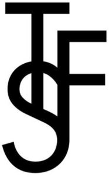

Trade Mark Journal No.2025/016 18 April 2025
WO0000001836844 (24,35)
Office of origin: France
Date of International Registration:11 September 2024
Date of designation in the UK:
11 September 2024

International priority date claimed: 13 March 2024
(France)
(5038415)
- Class 24
- Fabrics for textile use; textile fabrics for manufacturing textile household articles; knitted fabrics; household, table and home linen; bed linen, namely, blankets, sheets, bed skirts, bed valences, bed spreads, duvet covers, bolster cases, cushion covers, loose covers for furniture, plain and embroidered pillow cases, comforters, simple and embroidered duvet covers, diaper changing cloths, flat sheets, fitted sheets, eiderdowns (down coverlets), lap rugs, bedthrows; bath linen with the exception of clothing; washing mitts, towels, bath towels, textile face towels, bath sheets; table linen, namely, tablecloths, fabric table runners, textile table napkins, textile placemat sets; curtains.
- Class 35
- Advertising services; commercial business management; commercial administration; office functions; wholesale and retail services in stores, and via global computer networks, by catalog, by mail, by telephone, by radio and television, and via other electronic means for vases, bottles, plates, scent burners, candelabra [candlesticks], dishes, art objects made of porcelain, terracotta or glass, candle holders, candle holders not made of precious metals, candle rings not made of precious metals, pottery, chandeliers, centerpieces, trivets [table utensils], jars, glass boxes, crockery, kitchen or household utensils made of precious metal, perfume sprayers, perfume vaporizers, glass candle jars, glass containers, crockery made of precious metals, trays for household use, napkin rings, toilet cases, cosmetic utensils, toilet fittings, namely combs and sponges, brushes [except paintbrushes] and powders, brushes, brush-making materials, articles for cleaning purposes, steel wool, unworked or semi-worked glass [except glass used in construction], glassware, porcelain and earthenware, bottle openers, cruet stands for oil and vinegar, cocktail shakers, candle extinguishers, sugar bowls, bowls, tea infusers, candy boxes, powder puffs, shaving brushes, insulating flasks, stew-pans, non-electric coffee pots not made of precious metals, boxes, shoehorns, canisters [drinking flasks], epergnes [table centerpieces], shoe brushes, nail brushes, toothbrushes, dishwashing brushes, baskets, fitted picnic baskets [including dishes], bread baskets, strainers, ice buckets, mixing spoons [kitchen utensils], scoops, decanters, salad bowls, spatulas, lunch boxes, flasks, ironing board covers, money boxes not made of metal, egg cups, soap holders, jugs, signboards made of porcelain or glass, liqueurs trays, liqueur sets, flower stands, cookery molds, hand-operated mills for household purposes, art objects made of porcelain, terracotta or glass, chamber pots, cloths and rags for dusting, pepper pots, powder compacts, porcelain button handles, shaving brush stands, sponge holders, coasters for bottles and glasses not made of paper and other than table fabric, trouser presses, perfume sprayers and perfume vaporizers, coasters for bottles, trivets, corkscrews, laundry driers, coffee and tea services, soup bowls, bread boards, cutting boards, lids for pans, cups, insulated bottles, teapots, flower pots, tableware, glasses, small flasks, applicators for cosmetics, make-up brushes, make-up sponge, make-up removing appliances, hairbrushes, eyelash brushes, eyebrow brushes, toilet brushes, combs, animal bristles [brushware], flasks, perfume vaporizers, soap dispensers, heads for electric toothbrushes, water apparatus for cleaning teeth and gums, isothermic bags, mugs, soap boxes, glasses [containers], flower pot covers not made of paper, art objects made of porcelain, ceramic, earthenware, terracotta, or glass, serving trays, valet trays [containers for small objects] for household use, place mat sets not made of paper or textile, fly swatters, soap dispenser bottle, container glasses, fabrics for textile use, fabrics for manufacturing textiles, knitted fabrics, household, table and home linen, bed linen namely blankets, sheets, bed skirts, bed valences, bed spreads, duvet covers, bolster covers, cushion covers, loose covers for furniture, simple and embroidered pillow cases, comforters, simple and embroidered duvet covers, diaper changing sheets, flat sheets, fitted sheets, eiderdowns [down coverlets], lap robes, bed throws, bath linen except clothing, gloves for toiletry purposes, towels, bath towels, textile face towels, bath sheets, floor mats, table linen namely tablecloths, fabric table runners, textile table napkins, textile place mat sets, curtains; product demonstration service; sales promotion (for third parties); procurement services for third parties (purchasing goods and services for other businesses); newspaper subscription services (for third parties); dissemination of advertisements; dissemination of advertising material (leaflets, prospectuses, printed matter, samples); business management assistance; postal, radio and television advertising; presentation of goods on all communication media, for retail purposes; accounting; document reproduction; employment agencies; computer file management; organization of exhibitions for commercial or advertising purposes; online advertising on a computer network; rental of advertising time on all communication media; publication of advertising texts; rental of advertising space; public relations.
FRANKIE SHOP LLC
Representative: Madame Erber Mélanie Coblence Avocats, 62 avenue Marceau, F-75008 Paris, FRANCE